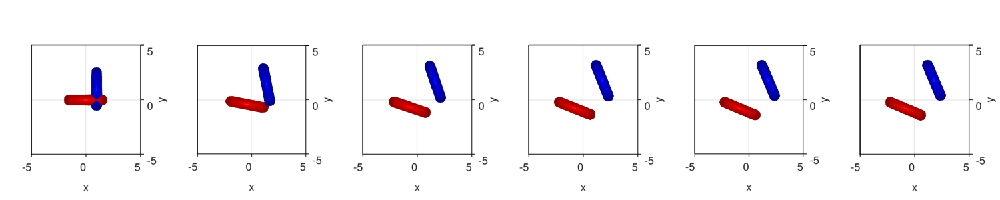
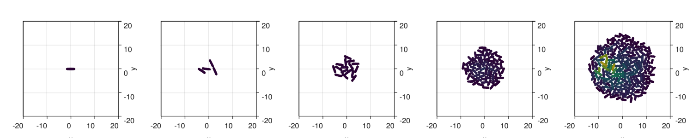

Bacterial Colony Growth
In this example, we are going to create a bacterial model and grow a colony using it.
- The implementation of the force interaction dynamics is the one presented by Volfson et al. (2008)
- We use GPU accelerated dynamics
As described in other models, it is advised that the models are constructed by parts to avoid having to find bugs in a very complex system. Hence, we will split the model in two parts:
- Forces model
- Growth model
Load the packages
using CellBasedModels
using CUDA
using Distributions
using GLMakie #Can be changes to Cairo or CLMakie
using GeometryBasics
Makie.inline!(true);Forces model
We already use the defined forces model that is implemented in CBMModels. This is an exact copy of the rod model that you can find already predefined in Models/rods.jl. You can check the Models section of the documentation for more details.
rod2D = ABM(2,
agent = Dict(
:vx=>Float64,
:vy=>Float64,
:theta=>Float64,
:ω=>Float64,
:d=>Float64,
:l=>Float64,
:m=>Float64,
:fx=>Float64,
:fy=>Float64,
:W=>Float64,
:pressure=>Float64
), #Local Interaction Parameters
model = Dict(
:kn=>Float64,
:γn=>Float64,
:γt=>Float64,
:μcc=>Float64,
:μcw=>Float64,
:β=>Float64,
:βω=>Float64
), #Global parameters
agentODE = quote
fx = 0
fy = 0
W = 0
pressure = 0
@loopOverNeighbors i2 begin
#Use the model provided in the documentation
Fijx, Fijy, Wij = CBMModels.rodForces(
x,y,d,l,theta,vx,vy,m,
x[i2],y[i2],d[i2],l[i2],theta[i2],vx[i2],vy[i2],m[i2],
kn,γn,γt,μcc,μcw
)
#Append the interaction forces
fx += Fijx
fy += Fijy
#Append radial forces
W += Wij
#Keep track of preassure in the media
pressure += sqrt(Fijx^2+Fijy^2)
end
#Equations
dt(x) = vx
dt(y) = vy
dt(vx) = -β*vx+fx/m
dt(vy) = -β*vy+fy/m
dt(theta) = ω
dt(ω) = W/(m*(d+l)^2/12+m*d^2)-βω*ω
end,
neighborsAlg=CBMNeighbors.CellLinked(cellEdge=4),
platform=GPU(),
agentAlg = CBMIntegrators.Heun()
);
Initialize a community with two bacteries and check forces
com = Community(rod2D,
N=2,
dt=0.1,
simBox = [-20 20;-20 20.],
);
#Natural units scales
m = 1/100
g = 1/10000
d = 1
#Model constants
com.kn = 2E6 * (m*g/d)
com.γn = 2.2E2 * sqrt(g/d)
com.γt = 2.2E2 * sqrt(g/d)
com.μcc = 0.1
com.μcw = 0.8
com.β = .8
com.βω = .8
#Agent parameters
com.m = 1
com.d = 1
com.l = 3;
# You can play to put different positions and angles here and see the behaviour of the interacting bacteries
com.x = [0.,1]
com.y = [0.,1]
com.theta = [0,π/2];evolve!(com,steps=50,saveEach=1,preallocateAgents=0)function CBMPlots.plotRods2D!(ax, x, y, d, l, angle; kargs...)
Main.meshscatter!(ax,
x.+l./2 .*cos.(angle),
y.+l./2 .*sin.(angle),
marker=GeometryBasics.Sphere(Point3f0(0,0,0.),Float32(1)),
markersize=[
Point3f0(i/2,i/2,0)
for i in d
];
kargs...
)
Main.meshscatter!(ax,
x.-l./2 .*cos.(angle),
y.-l./2 .*sin.(angle),
marker=GeometryBasics.Sphere(Point3f0(0,0,0),Float32(1)),
markersize=[
Point3f0(i/2,i/2,0)
for i in d
];
kargs...
)
Main.meshscatter!(ax,
x,
y,
marker=GeometryBasics.Cylinder(Point3f0(-.5,0,0),Point3f0(.5,0,0),Float32(1)),
markersize=[Point3f0(ll,dd/2,dd/2) for (ll,dd) in zip(l,d)],
rotations=angle;
kargs...
)
return
end
fig = Figure(resolution=(1500,300))
for (i,j) in enumerate([1:round(Int,length(com)/4):length(com);length(com)])
ax = Axis3(fig[1,i],
azimuth=3*π/2,
elevation=π/2,
zlabelvisible=false,
zticklabelsvisible=false,
zgridvisible=false,
zspinesvisible=false
)
CBMPlots.plotRods2D!(ax,com[j][:x],com[j][:y],com[j][:d],com[j][:l],com[j][:theta],color=[:red,:blue])
xlims!(-5,5)
ylims!(-5,5)
end
display(fig)
Growth model
We construct over the forces model to add bacterial growth and cell division rules.
rods2dGrowth = ABM(2,
baseModelInit = [rod2D],
agent = Dict(
:lTarget => Float64
),
model = Dict(
:growth=>Float64,
:σlTarget=>Float64,
:lMax=>Float64,
:α=>Float64
),
agentODE = quote
dt(l) = growth/(1+α*pressure) #linear growth with growth dependent on the pressure over the cell
end,
agentRule = quote #Bound cells
#Add division
if l > lTarget
ww = CBMDistributions.uniform(-.1,.1) #To add some random torque at division time
#Add a new cell
@addAgent(
x=(l+d)/4*cos(theta)+x,
y=(l+d)/4*sin(theta)+y,
l=(l-d)/2,
ω = ww,
lTarget = CBMDistributions.uniform(lMax-σlTarget,lMax+σlTarget) #New target length at which the bactery should divide
)
#Add a second cell
@addAgent(
x=-(l+d)/4*cos(theta)+x,
y=-(l+d)/4*sin(theta)+y,
l=(l-d)/2,
ω = -ww,
lTarget = CBMDistributions.uniform(lMax-σlTarget,lMax+σlTarget) #New target length at which the bactery should divide
)
#Remove the old cell
@removeAgent()
end
end,
neighborsAlg=CBMNeighbors.CellLinked(cellEdge=4),
platform=GPU(),
agentAlg=CBMIntegrators.Heun()
);Grow colony from one cell
com = Community(rods2dGrowth,
N=1,
dt=0.1,
simBox = [-100 100;-100 100.],
);
m = 1/100
g = 1/10000
d = 1
com.kn = 2E6 * (m*g/d)
com.γn = 2.2E2 * sqrt(g/d)
com.γt = 2.2E2 * sqrt(g/d)
com.μcc = 0.1
com.μcw = 0.8
com.β = .8
com.βω = .8
com.growth = 1E-6 * (sqrt(g*d)) *100000
com.lMax = 3.
com.σlTarget = .2
com.α = 50
com.m = 1.
com.d = 1.
com.l = 2.99
com.lTarget = 3.
com.x = 0
com.y = 0
com.theta = 0;evolve!(com,
steps=150000,saveEach=1000,
preallocateAgents=1000,
saveCurrentState=true,
progressMessage=(com)->if round(Int,com.t/com.dt)%10000 == 0; println("Step: ",round(Int,com.t/com.dt), " N: ", com.N); end)Step: 1000
Step: 2000
Step: 3000
Step: 4000
Step: 5000
Step: 6000
Step: 7000
Step: 8000
Step: 9000
Step: 10000
Step: 11000
Step: 12000
Step: 13000
Step: 14000
Step: 15000
Step: 16000
Step: 17000
Step: 18000
Step: 19000
Step: 20000
Step: 21000
Step: 22000
Step: 23000
Step: 24000
Step: 25000
Step: 26000
Step: 27000
Step: 28000
Step: 29000
Step: 30000
Step: 31000
Step: 32000
Step: 33000
Step: 34000
Step: 35000
Step: 36000
Step: 37000
Step: 38000
Step: 39000
Step: 40000
Step: 41000
Step: 42000
Step: 43000
Step: 44000
Step: 45000
Step: 46000
Step: 47000
Step: 48000
Step: 49000
Step: 50000
Step: 51000
Step: 52000
Step: 53000
Step: 54000
Step: 55000
Step: 56000
Step: 57000
Step: 58000
Step: 59000
Step: 60000
Step: 61000
Step: 62000
Step: 63000
Step: 64000
Step: 65000
Step: 66000
Step: 67000
Step: 68000
Step: 69000
Step: 70000
Step: 71000
Step: 72000
Step: 73000
Step: 74000
Step: 75000
Step: 76000
Step: 77000
Step: 78000
Step: 79000
Step: 80000
Step: 81000
Step: 82000
Step: 83000
Step: 84000
Step: 85000
Step: 86000
Step: 87000
Step: 88000
Step: 89000
Step: 90000
Step: 91000
Step: 92000
Step: 93000
Step: 94000
Step: 95000
Step: 96000
Step: 97000
Step: 98000
Step: 99000
Step: 100000
Step: 101000
Step: 102000
Step: 103000
Step: 104000
Step: 105000
Step: 106000
Step: 107000
Step: 108000
Step: 109000
Step: 110000
Step: 111000
Step: 112000
Step: 113000
Step: 114000
Step: 115000
Step: 116000
Step: 117000
Step: 118000
Step: 119000
Step: 120000
Step: 121000
Step: 122000
Step: 123000
Step: 124000
Step: 125000
Step: 126000
Step: 127000
Step: 128000
Step: 129000
Step: 130000
Step: 131000
Step: 132000
Step: 133000
Step: 134000
Step: 135000
Step: 136000
Step: 137000
Step: 138000
Step: 139000
Step: 140000
Step: 141000
Step: 142000
Step: 143000
Step: 144000
Step: 145000
Step: 146000
Step: 147000
Step: 148000
Step: 149000
Step: 150000fig = Figure(resolution=(1500,300))
for (i,j) in enumerate([1:round(Int,length(com)/4):length(com);length(com)])
ax = Axis3(fig[1,i],
azimuth=3*π/2,
elevation=π/2,
zlabelvisible=false,
zticklabelsvisible=false,
zgridvisible=false,
zspinesvisible=false
)
CBMPlots.plotRods2D!(ax,com[j][:x],com[j][:y],com[j][:d],com[j][:l],com[j][:theta],
color=com[j][:pressure], colorrange=(0,0.05))
xlims!(-20,20)
ylims!(-20,20)
end
display(fig)